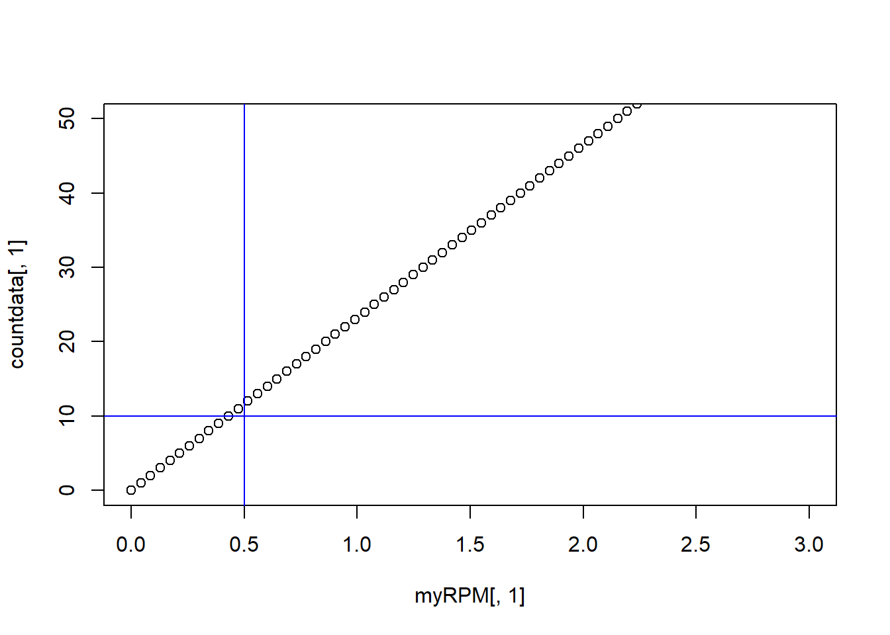
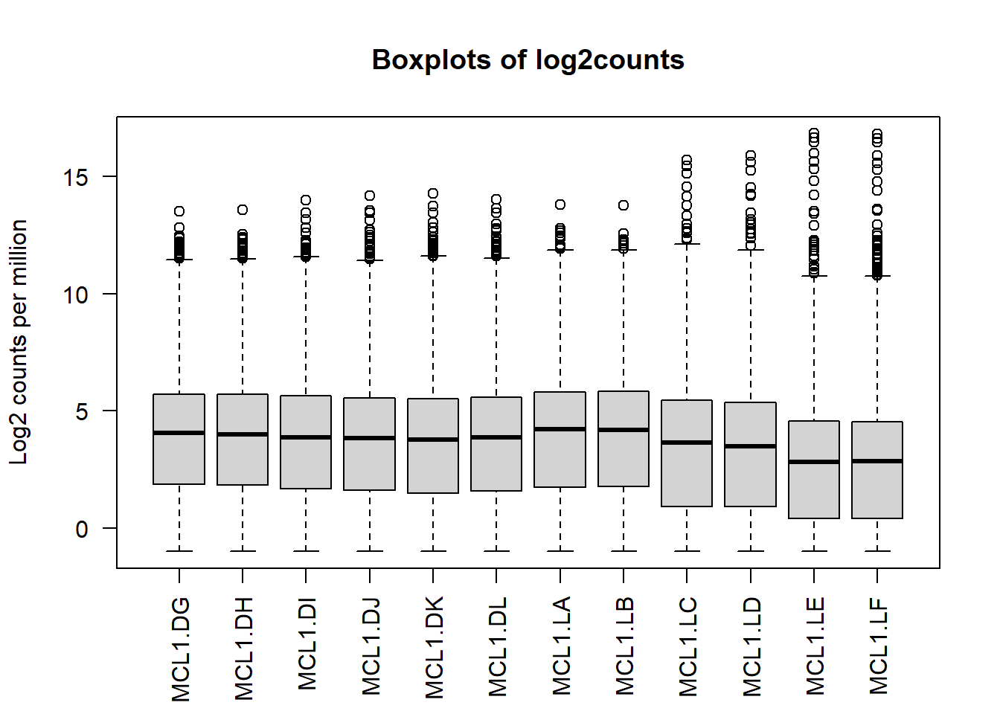
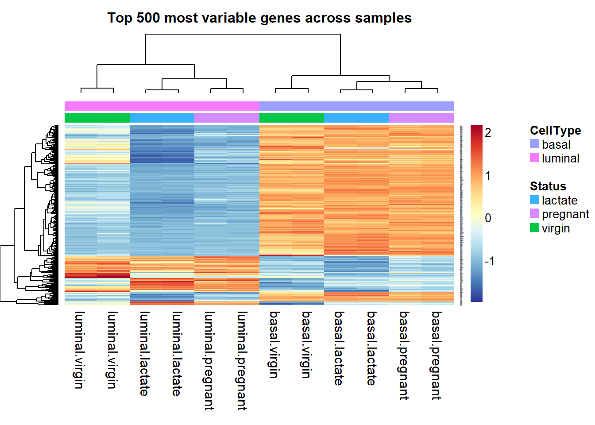
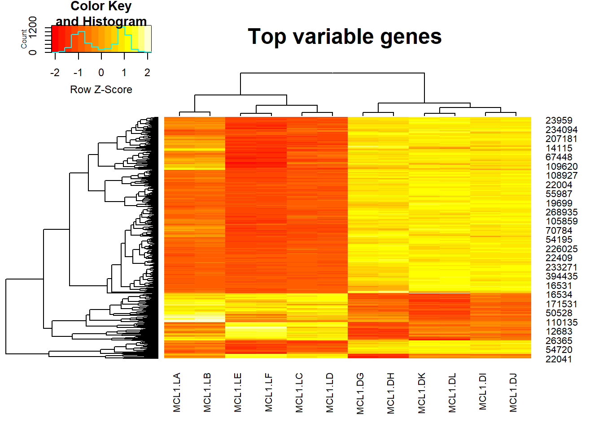

Chapter 7 RNA-seq analysis in R
This Chapter is modified based on the tutorial RNA-seq analysis in R created by Belinda Phipson et.al. This little vignette examines the expression profiles of basal stem-cell enriched cells (B) and committed luminal cells (L) in the mammary gland of virgin, pregnant and lactating mice. Six groups are present, with one for each combination of cell type and mouse status. Each group contains two biological replicates. The original data source
7.1 Read the sample information
The sampleinfo file contains basic information about the samples that we will need for the analysis today.
# Read the sample information into R
sampleinfo <- read.table("data/SampleInfo.txt",header = TRUE)
View(sampleinfo)
sampleinfo## FileName SampleName CellType Status
## 1 MCL1.DG_BC2CTUACXX_ACTTGA_L002_R1 MCL1.DG basal virgin
## 2 MCL1.DH_BC2CTUACXX_CAGATC_L002_R1 MCL1.DH basal virgin
## 3 MCL1.DI_BC2CTUACXX_ACAGTG_L002_R1 MCL1.DI basal pregnant
## 4 MCL1.DJ_BC2CTUACXX_CGATGT_L002_R1 MCL1.DJ basal pregnant
## 5 MCL1.DK_BC2CTUACXX_TTAGGC_L002_R1 MCL1.DK basal lactate
## 6 MCL1.DL_BC2CTUACXX_ATCACG_L002_R1 MCL1.DL basal lactate
## 7 MCL1.LA_BC2CTUACXX_GATCAG_L001_R1 MCL1.LA luminal virgin
## 8 MCL1.LB_BC2CTUACXX_TGACCA_L001_R1 MCL1.LB luminal virgin
## 9 MCL1.LC_BC2CTUACXX_GCCAAT_L001_R1 MCL1.LC luminal pregnant
## 10 MCL1.LD_BC2CTUACXX_GGCTAC_L001_R1 MCL1.LD luminal pregnant
## 11 MCL1.LE_BC2CTUACXX_TAGCTT_L001_R1 MCL1.LE luminal lactate
## 12 MCL1.LF_BC2CTUACXX_CTTGTA_L001_R1 MCL1.LF luminal lactate7.2 Read the count data
You can use the head() command to see the first 6 lines. In RStudio the View command will open the dataframe in a new tab. The dim command will tell you how many rows and columns the data frame has.
# Read the data into R
seqdata <- read.table("data/GSE60450_Lactation-GenewiseCounts.txt",header = TRUE, stringsAsFactors = FALSE)
View(seqdata)
dim(seqdata)## [1] 27179 14group <- factor(paste(sampleinfo$CellType,sampleinfo$Status,sep="."))
sampleinfo$group <- groupThe seqdata object contains information about genes (one gene per row), the first column has the Entrez gene id, the second has the gene length and the remaining columns contain information about the number of reads aligning to the gene in each experimental sample. There are two replicates for each cell type and timepoint. Next, we should format the data and create a dataframe with 12 samples and 27179 genes.
7.3 Format the data
The first two columns in the seqdata dataframe contain annotation information. We need to make a new matrix containing only the counts, but we can store the gene identifiers (the EntrezGeneID column) as rownames. We will add more annotation information about each gene later on in the workshop.
Let’s create a new data object, countdata, that contains only the counts for the 12 samples.
# Remove first two columns from seqdata
countdata <- seqdata[,-(1:2)]
# Store EntrezGeneID as rownames
rownames(countdata) <- seqdata[,1]
View(countdata)As we can see the column names for the countdata now is V1 to V14, we want to have a more meaningful column names. But the sample name is too long so we want to just keep the first 7 characters.
samplename <- substr(colnames(countdata), 1, 7)
samplename## [1] "MCL1.DG" "MCL1.DH" "MCL1.DI" "MCL1.DJ" "MCL1.DK" "MCL1.DL" "MCL1.LA"
## [8] "MCL1.LB" "MCL1.LC" "MCL1.LD" "MCL1.LE" "MCL1.LF"And we can now modify the column names.
colnames(countdata) <- samplename
head(countdata)## MCL1.DG MCL1.DH MCL1.DI MCL1.DJ MCL1.DK MCL1.DL MCL1.LA MCL1.LB
## 497097 438 300 65 237 354 287 0 0
## 100503874 1 0 1 1 0 4 0 0
## 100038431 0 0 0 0 0 0 0 0
## 19888 1 1 0 0 0 0 10 3
## 20671 106 182 82 105 43 82 16 25
## 27395 309 234 337 300 290 270 560 464
## MCL1.LC MCL1.LD MCL1.LE MCL1.LF
## 497097 0 0 0 0
## 100503874 0 0 0 0
## 100038431 0 0 0 0
## 19888 10 2 0 0
## 20671 18 8 3 10
## 27395 489 328 307 342Now the column names are now the same as SampleName in the sampleinfo file.
table(colnames(countdata)==sampleinfo$SampleName)##
## TRUE
## 127.4 Reads per million (RPM)
Reads per million attempt to normalize for sequencing depth. Here’s how you do it for RPM:
- Count up the total reads in a sample and divide that number by 1,000,000 – this is our “per million” scaling factor.
- Divide the read counts by the “per million” scaling factor. This normalizes for sequencing depth, giving you reads per million (RPM)
We can use mapply() to divide each column by the scaling_factor.
scaling_factor <- apply(countdata, 2, sum)/1000000
myRPM <- mapply('/', countdata, scaling_factor)Notice that now the myRPM data is a matrix and the rowname is replace by the index 1 to 27179, we want myRPM to be a dataframe with EntrezGeneID as rownames.
myRPM <- as.data.frame(myRPM)
rownames(myRPM) <- seqdata[,1]7.5 Filtering
Then we can filter out some lowly expressed genes. There are two sample replicates for each group, so we can filter on the RPM with some threshold present in at least 2 samples. And how to decide your threshold, normally a RPM corresponding to count of 10-15 is a good threshold. We can use the scatter plot to decide the number of RPM corresponding to the count 10.
# plot takes the first arg as x and second arg as y, you can specify the range of x-axis and y-axis by xlim and ylim.
plot(myRPM[,1],countdata[,1],ylim=c(0,50),xlim=c(0,3))
# Add a vertical line at 0.5 and a horizontal line at 10, you can change the color by col.
abline(h=10,v=0.5,col="blue") As we can see RPM = 0.5 can be a very good threshold. Then let’s summarize how many RPM greater than 0.5 there are in each row
table(rowSums(myRPM > 0.5))##
## 0 1 2 3 4 5 6 7 8 9 10 11 12
## 10857 518 544 307 346 307 652 323 547 343 579 423 11433We would like to keep genes that have at least 2 RPM greater than 0.5 in each row.
summary(rowSums(myRPM > 0.5) >= 2)## Mode FALSE TRUE
## logical 11375 15804As we can see there are 11375 genes that needs to be filtered according to the threshold. And we have 15804 genes after filtering.
myRPM.keep <- myRPM[rowSums(myRPM > 0.5) >= 2,]
dim(myRPM.keep)## [1] 15804 12Normalization
Count data is not normally distributed, so if we want to examine the distributions of the raw counts we need to log the counts. A base-2 logarithm with a pseudo-count is normally used.
The use pesudo-count is to avoid taking the logarithm of 0(- inifinite). You can use log2(x+0.5) or log2(x+1). log2(x+0.5) will normalize 0 to -1, while log2(x+1) results in all positive values.
Next we’ll use box plots to check the distribution of the read counts on the log2 scale.
logcounts <- as.matrix(log2(myRPM.keep+0.5))
boxplot(logcounts, xlab="", ylab="Log2 counts per million",las=2)
title("Boxplots of log2counts")7.6 Select highly variable genes
Let’s select data for the 500 most variable genes and plot the heatmap.
# We estimate the variance for each row in the logcounts matrix
var_genes <- apply(logcounts, 1, var)
head(var_genes)## 497097 20671 27395 18777 21399 58175
## 6.0221458 1.5403589 0.1508798 0.1272154 0.3837607 2.4248936Get the gene names for the top 500 most variable genes.
select_var <- names(sort(var_genes, decreasing=TRUE))[1:500]
head(select_var)## [1] "11475" "22373" "14663" "12797" "17880" "110308"Then we get a logcounts matrix with only highly variable genes.
highly_variable_lRpm <- logcounts[select_var,]
dim(highly_variable_lRpm)## [1] 500 127.7 Hierarchical clustering with heatmaps
And finally we can do hierarchical clustering with heatmaps.heatmap.2() is a very powerful tool from the gplots library to create enhanced heatmap with a dendrogram added to the left side and/or to the top.
Typically, reordering of the rows and columns according to some set of values (row or column means) within the restrictions imposed by the deprogram is carried out.
heatmap.2 provides a number of extensions to the standard R heatmap function.
library('gplots')## Warning: package 'gplots' was built under R version 4.0.4##
## Attaching package: 'gplots'## The following object is masked from 'package:stats':
##
## lowess7.7.1 Plot top variable genes across samples
heatmap.2(highly_variable_lRpm,trace="none", main="Top variable genes ",scale="row",cexCol=.8,cexRow=.8)
Advance
As we can see, the result of heatmap.2 is not easy to interpret, if we want to add more information such as annotation for cell types, we can use aheatmap function from NMF package.
library(NMF)## Loading required package: pkgmaker## Loading required package: registry## Loading required package: rngtools## Loading required package: cluster## NMF - BioConductor layer [OK] | Shared memory capabilities [NO: windows] | Cores 7/8Some explanationa:
- color = ‘-RdYlBu:200’: “RdYlBu” is a color palette, “-RdYlBu:200” means reversed palette ‘RdYlBu’ with 200 colors.
- main=“Top 500 most variable genes across samples”: Main title is Top 500 most variable genes across samples.
- annCol=sampleinfo[, 3:4]: sampleinfo[, 3:4] contains the inforamtion for CellType and Status. anncol stands for specifications of column annotation tracks displayed as colored rows on top of the heatmap.
- scale=“row”: The values is scaled in the row direction, more specifically, each row is centered and standardized separately by row Z-scores.
- labCol=sampleinfo$group: Labels for the columns are the group informations from sampleinfo.
And by specifying all the details, we can get a very beautiful heatmap.
aheatmap(highly_variable_lRpm,color = "-RdYlBu:200", main="Top 500 most variable genes across samples", annCol=sampleinfo[, 3:4], scale="row", labCol=sampleinfo$group)
Save the figures
Create a folder called “result”, and now we can save the heatmap into the “result” folder.
png(file="./result/Highvargenes_heatmap.png",res=100)
aheatmap(highly_variable_lRpm,color = "-RdYlBu:200", main="Top 500 most variable genes across samples", annCol=sampleinfo[, 3:4], scale="row", labCol=sampleinfo$group)
dev.off()You can also use pdf() to save your figures in pdf format.
7.7.2 Plot sample-sample clustering heatmap
Pearson correlation is used to evaluate the correlation between samples when the data is normally distribute. As we already normalize the data, so we can get the pearson correlation by:
corr <- cor(myRPM.keep)
aheatmap(corr,main = "Correlation beween samples",labCol=sampleinfo$group,labRow=sampleinfo$group, width = 0.5, height = 0.5) Plot the heatmap and save the figures:
png(file="./result/correlations_heatmap.png",res=100)
aheatmap(corr,main = "Correlation beween samples",labCol=sampleinfo$group,labRow=sampleinfo$group, width = 0.5, height = 0.5)
dev.off()## png
## 27.8 PCA for multidimensional scaling plots
Principle components analysis, which determines the greatest sources of variation in the data. We can use the prcomp() function to perform a principal components analysis on the given data matrix from the package stats.
ggfortify is a package provides functions for ggplot2 to know how to interpret PCA objects. You can use autoplot() function for stats::prcomp and stats::princomp objects.
library(stats)
library(ggfortify)## Warning: package 'ggfortify' was built under R version 4.0.5First, we create the right inpur format for stats::prcomp, and we add a new column called CellType with the cell type information from sampleinfo.
RPMforPCA <- t(myRPM.keep)
RPMforPCA <- as.data.frame(RPMforPCA)
RPMforPCA$CellType <- sampleinfo$group
pc <- prcomp(RPMforPCA[,1:ncol(RPMforPCA)-1])
autoplot(pc, data = RPMforPCA, label = TRUE, label.size = 2, colour = 'CellType')## Warning: `select_()` was deprecated in dplyr 0.7.0.
## Please use `select()` instead.Use autoplot to visualize PCA results and save the figures.
png(file="./result/pca_results.png",res=100)
autoplot(pc, data = RPMforPCA, label = TRUE, label.size = 2, colour = 'CellType')
dev.off()## png
## 2